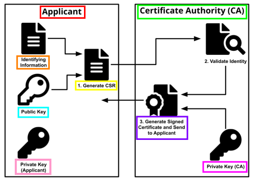

Digital Certificate (X.509)
Digital Certificate
Certificate Authority(CA) digital-sign the
certificate signing request (CSR) that contain the binded couple <
Identifying_Information,
Public_Key> signed
with the
private key(Applicant)This
mean that the
CA sign with his
private
key(CA) the
CSR certifying that the informations contained in the
CSR are correct and it will create a new file:
the
digital certificate(e.g.: X.509)
To know the informations contained in the
digital certificate the user have to use the
public
key of
CAX.509 • It is a standard defining the format of
digital certificates.
• It is used in many Internet protocols, including
TLS/SSL, which is the basis for HTTPS, the secure protocol for browsing the web.
• It binds a
public key and an
identity (a hostname, or an
organization, or the name of a person) with a digital-signature by a
certificate
authority(CA).
The structure of X.509 certificate is expressed with the formal language
ASN.1
The structure of X.509 certificate is like this:
◇
Serial
Number → Used to uniquely identify the certificate
◇
Subject → The person, or entity identified
◇
Signature Algorithm → The algorithm used to create the signature
◇
Issuer → The entity that verified the information and issued the
certificate
◇
Valid-From → The date the certificate is first
valid from
◇
Valid-To → The expiration date
◇
Public Key → The public key to encrypt a message to the named
subject
◇
Thumbprint Algorithm → The algorithm used to hash
the certificate
◇
Thumbprint → The thumbprint
itself
Common filename extensions for X.509:
◇ .DER → (Distinguished Encoding Rules) encode ASN.1
certificate in binary format
◇ .PEM → (Privacy Enhanced Mail) Base64 encoded DER certificate, enclosed between
"-----BEGIN CERTIFICATE-----" and "-----END CERTIFICATE-----"
◇ .P7C → PKCS#7 SignedData
structure without data, just certificate(s) or CRL(s) (Certificate Revocation List)
◇ .PFX or .P12 → PKCS#12,
may contain certificate(s) (public) and private keys (password protected)